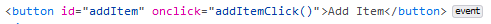
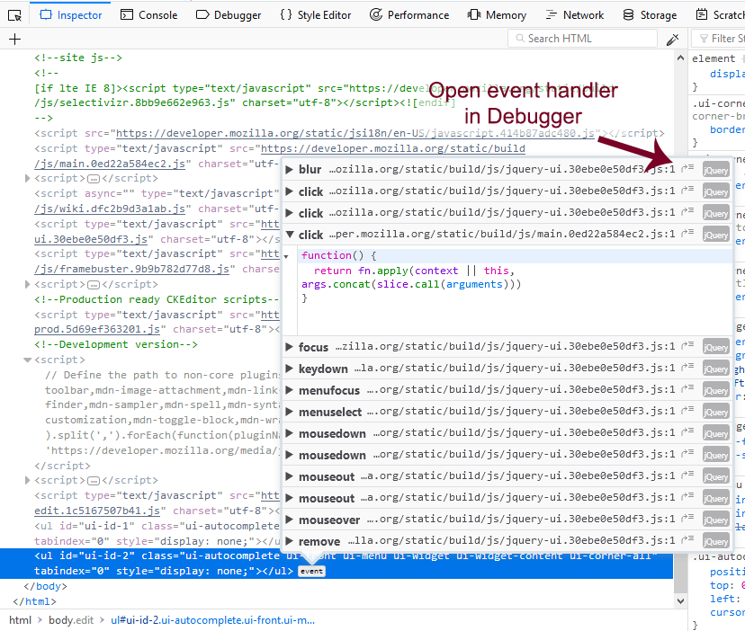

The inspector shows the word "event" next to elements in the HTML Pane, that have event listeners bound to them:

Click the icon, then you'll see a popup listing all the event listeners bound to this element:
Each line contains: